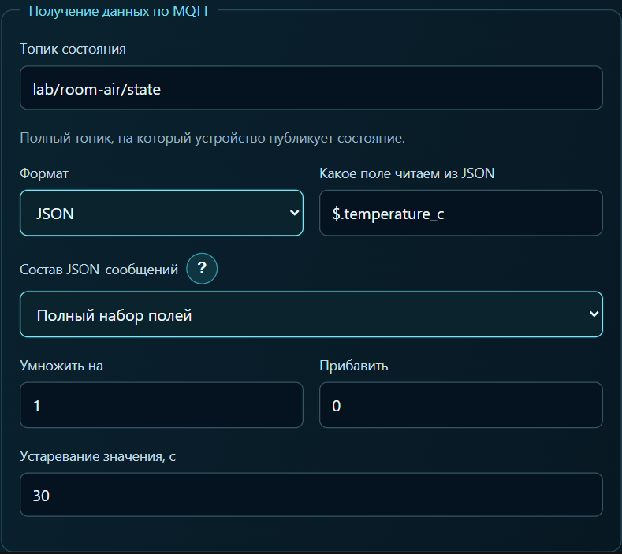

Один MQTT-топик, два тега и четыре карточки
Для комнатного датчика хотелось видеть температуру и влажность, а под каждой шкалой — график за последние часы. Получается четыре карточки. Вручную прописывать в каждой один и тот же топик утомительно, а опечатка в имени поля оставляет пустой график.
В практикуме RoomAir генератор отправил в локальный брокер сообщение {"temperature_c":22.0,"humidity_pct":49.6} в топик lab/room-air/state. Следующее сообщение принесло те же 22,0 °C и уже 49,4 % влажности. На этих двух сообщениях удобно проверить, правильно ли выбраны поля.
Настройка панели
Пока генератор работает, откройте «Поиск MQTT» и выберите
lab/room-air/state. Выберите поле$.temperature_c, сохраните привязку как тег температуры и задайте единицу °C. Аналогично сохраните$.humidity_pctкак влажность в процентах.
Включите историю для обоих тегов. Для шкалы и графика температуры выберите один и тот же тег температуры. Повторите с влажностью.
В готовом проекте запись настроена по изменению. На втором сообщении влажность должна перейти с 49,6 на 49,4 %, а температура останется на 22,0 °C. Ещё одну точку температуры при таком значении ждать не нужно. С готовой панели удобно начать и без ESP32 — в архиве есть генератор. Практикум, генератор и панель RoomAir